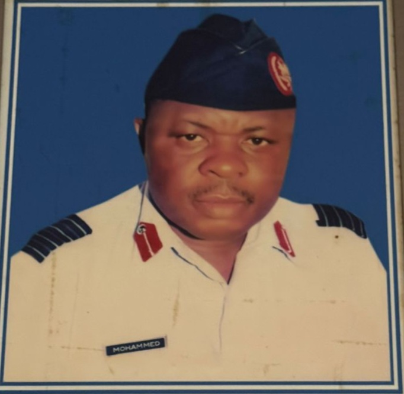
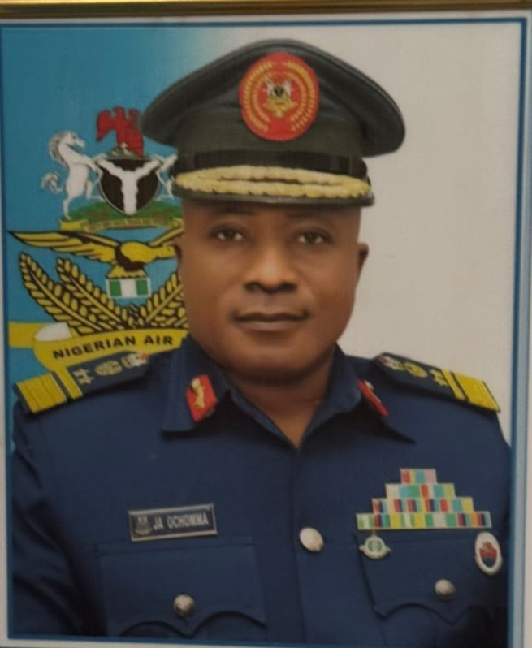

MAJ ADEJORO
1969 – June 1970
LT COL FO FAJOBI
July 1970 – Sept 1971
SQN LDR Y ABBA
1971-1972, 1973-1975
WG CDR EA OGUNMILORO
1972-1975, 1976-1979
GP CAPT LA DANGAJI
1975-1976, 1979, 1988-1990
GP CAPT US ABBAS
1976-1981, 1982-1984
GP CAPT G TAYLOR
1981-1982, 1984-1985
GP CAPT A YELDU
March 1985 – Jan 1988
GP CAPT R TINGLOCHA
May 1990 – April 1996

GP CAPT M MOHAMMED
April 1996 – July 1999
GP CAPT BB SABIYI
July 1999 – Dec 2002
GP CAPT EO ABIOYE
Dec 2002 – Sept 2005
GP CAPT YA SULEIMAN
Sept 2005 – June 2006
GP CAPT MR DABO
June 2006 – July 2008
GP CAPT SA YUSHAU
July 2008 – Jan 2009
GP CAPT HM KOLO
Jan 2009 – Oct 2010
GP CAPT OO GBADEBO
Oct 2010 – Dec 2011
AIR CDRE TE OPUIYO
Dec 2011 – Jan 2014
AIR CDRE US SULEIMAN
Jan 2014 – Dec 2015
GP CAPT AI ADAMU
Dec 2015 – Feb 2016

AVM JA OCHOMMA
Feb 2016 – Jan 2022
AIR CDRE MU ABDULRAHEEM
2022, 2023-2024
AVM IP IRUMHESON
April 2022 – June 2023
GP CAPT AK MUHAMMAD
Sept 2024 – Till Date